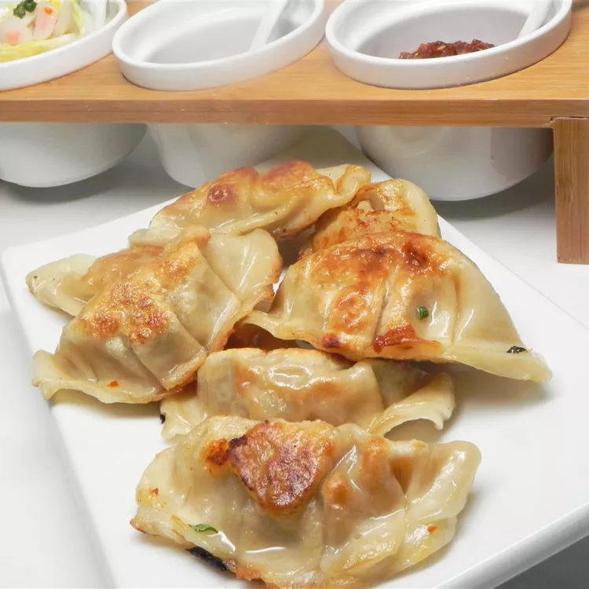

Taiwanese Dumplings

DESCRIPTION
A dumpling recipe direct from a Taiwanese friend.
INGREDIENTS
- 2 heads napa cabbage finely chopped
- 1 bunch cilantro
- 2 pounds ground pork
- 3 jalapeno peppers minces
- 2 large egg whites
>
STEPS
- Spread cabbage and cilantro over clean dish towel
- Transfer cabbage and cilantro to a large bowl and mix ground pork, jalapeno peppers, etc.
- Line 2 baking sheets with waxed paper
- Hold potsticker wrapper in palm of your hand and wrap a spoonful of ingredients in it
- Place dumplings in freezer until firm and cook